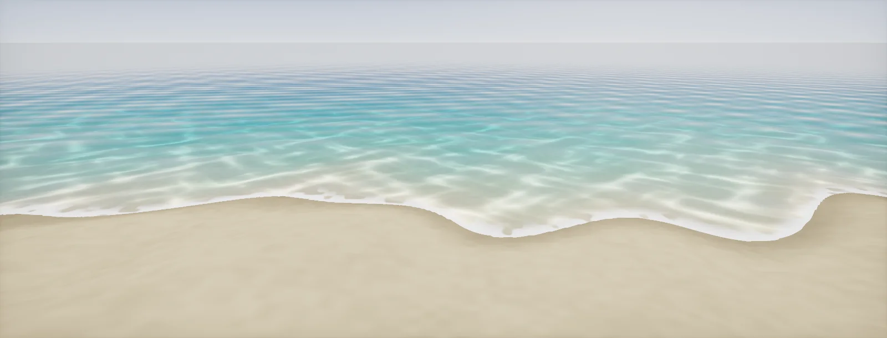

Water
How water shaders work: Fresnel at 2 %, waves from normals and Gerstner, depth from the depth buffer, colour from absorption and scattering, shore foam, refraction, caustics, the view from below, and cheap tiers, built in Unity HDRP and Unreal.

Reflection and transmission
Water is a dielectric with an IOR of 1.33, so its surface reflects only 2 % head-on (F0 = 0.02) and close to 100 % at grazing angles.
Everything else you see comes from below: the bottom, seen through water that absorbs and scatters light. The balance between the two changes across every view of a lake:
A water shader is these three layers, and the rest of the unit builds each:
- The surface: waves and normals that shape the reflection (waves) and what reflects in it (reflections).
- The body: how much water the light crosses (depth) and what that does to its colour (absorption).
- The things in between: foam and shorelines, refraction, caustics, and the view from below.
Wave normals and Gerstner waves
Most of what reads as "water" is the surface normal. Small ripples come from normal maps scrolling in two or three directions at different speeds (flow maps steer them along rivers). Larger waves move the geometry. The classic shape is the : each water particle moves in a circle, so crests sharpen and troughs flatten, as in real swell:
Deep-water physics ties speed to wavelength: ω = √(g k), so long waves are fast. Sum three to eight waves with different directions and wavelengths and the pattern stops looking repetitive. Large oceans use a spectrum computed with an FFT instead (Tessendorf's method; HDRP's ocean and Unreal's water both build on spectra and wave sums), but the visual principles are the same.
Keep steepness below the loop limit: when Q · A · k exceeds 1, the crest folds over itself. That point is also where foam appears on real waves, so it doubles as a foam mask.
Water depth
Colour, foam and refraction all depend on how much water lies between the surface and the ground. A transparent water surface can read the depth buffer, which holds the ground behind it. Subtract the surface's own depth and you get the distance the view ray travels through water, after linearising both:
Use the right one for each job. Absorption follows the path: looking across a shallow pool at a low angle, you see through a lot of water. Foam, shore fades and caustics follow the vertical depth: they belong to places, not to views. Divide by the cosine of the angle to the camera axis when the pixel is far from the screen centre, because the depth buffer stores distance along the view axis.
Absorption and scattering
Pure water absorbs red light far more than blue: measured absorption is roughly 0.35 per metre for red (650 nm), 0.06 for green and about 0.01 for blue (Pope and Fry, 1997). After a few metres, red is gone; after tens of metres, green too. That is why clear water is blue-green. Particles and plankton add scattering: light that bounces back towards you from inside the water, which gives lagoons their turquoise and rivers their brown:
The model in one line: colour = bottom · T + scatter · (1 − T). Deep water converges to the scatter colour; shallow water shows the bottom. Engines expose the same two parts: HDRP's water has a refraction (absorption) colour and distance and a scattering colour; Unreal's Single Layer Water has absorption and scattering coefficients; OpenPBR's volume parameters split them the same way.
Authoring tip: choose absorption first, from a reference photo of the bottom fading with depth, then add scattering until deep areas reach the right colour. Doing it the other way round tends to give milky water.
Shorelines, foam and soft edges
Where water meets ground, the depth goes to zero, and an unprocessed water plane shows a hard line. The vertical depth fixes it: fade the surface in over the first few centimetres (the soft-particle trick), and draw foam where the water is shallow:
A plain band looks like a stripe painted along the coast. Break it up: subtract a scrolling noise from the band, use a foam texture as the threshold so foam appears as patches, and let it pulse with the waves (foam where Gerstner steepness peaks). Foam is opaque and white-ish, rough and sits on top, so it raises the alpha and lowers the smoothness where it appears.
Refraction
Water refracts what lies below it, which real-time renderers do with the screen copy: offset the UV by the surface normal and read the scene behind.
Two water-specific rules:
- Scale the offset by depth. In real water, the bottom right at the shoreline barely moves; deep water distorts strongly. It also hides the worst leaks.
- Reject samples in front of the water, as in depth rejection: a pier, a leg, a boat at the waterline would otherwise smear into the water.
For large flat water, physically accurate IOR-based refraction offsets too much at a distance; that is why Unreal recommends Pixel Normal Offset refraction for water and HDRP clamps it with a maximum refraction distance.
Caustics
The bright net on a pool floor is sunlight focused by the waves. Each crest is a weak lens: light passing through it converges at a certain depth and spreads out again. Trace sunlight through a wavy surface and count how many rays reach each part of the floor:
The pattern is sharpest at the focal depth of the crests and blurs above and below it, which is why caustics in a shallow pool look different from those on a deep reef. Games rarely simulate this. The usual cheap version projects an animated caustics texture from above onto underwater geometry (by world XZ position or as a light cookie), multiplies it into the sunlight only, and fades it with depth and with the absorption of the water above. HDRP's water system simulates them from its own waves at a virtual plane distance; Unreal uses light functions, decals or the water plugin's options.
Underwater view
Seen from below, the surface behaves differently. Light from the whole sky enters only within a cone, because of refraction: the sky appears as a bright circle overhead, , and outside it the surface is a mirror of the water below (total internal reflection):
The rest of the underwater look is the same absorption and scattering applied to everything the camera sees, as a fog: colour = object · T(distance) + scatter · (1 − T). Renderers do it as a full-screen pass when the camera is below the surface, plus a waterline effect where the camera cuts the surface. Make the surface shader two-sided and switch to the total-reflection look from below, or the sky shows through everywhere.
Quality tiers
Every layer of this unit has a cheaper stand-in. Pick per platform and per water body:
| Tier | Surface | Below the surface | Edges | Typical cost |
|---|---|---|---|---|
| Hero (PC, console) | simulated or Gerstner waves, detail normals, SSR or ray-traced reflections | screen copy with refraction, depth-based absorption and scattering, caustics | depth-based foam, soft edges, underwater fog and waterline | several full-screen reads, a dense mesh |
| Mid | scrolling normal maps, a couple of Gerstner waves | screen copy, absorption by depth, no caustics or a projected texture | depth fade, foam texture by depth | one screen copy, depth reads |
| Low (mobile, VR) | normal maps, a probe or gradient reflection, Fresnel | no copy: alpha blending with a colour that darkens with baked or vertex-painted depth | vertex colour or a baked depth texture for foam and fade | a single transparent pass |
| Stylised | flat colour bands, toon highlights | depth bands from the depth buffer, or nothing | foam lines from depth | cheap; depth buffer optional |
Without a depth buffer (some mobile paths), bake the water depth into vertex colours or a texture when the level is built. It is static, but foam, fades and colour by depth then cost nothing at runtime.
Build it in Unity HDRP
HDRP has a full water system (simulation, scattering, caustics, foam, underwater) and also lets you build water as a transparent Lit graph. The steps cover both: the system for oceans, rivers and pools, and a custom graph for ponds, stylised water or when you need full control. The custom graph lets HDRP do the refraction and absorption and feeds it a thickness computed from the depth buffer. Written for Unity 6 with HDRP 17; Unity 2022 LTS works the same apart from a few renamed menu entries.
- Water System: in Project Settings > Quality > HDRP, open Rendering and enable Water. In Graphics > Pipeline Specific Settings > HDRP > Frame Settings, enable Water for Camera, Realtime Reflection and Custom or Baked Reflection.
- Select the global Volume, Add Override > Lighting > Water Rendering, set State to Enabled. Then GameObject > Water Surface > Pool, River or Ocean.
- Appearance in the Water Surface inspector, in this unit's terms: Refraction > Color and Absorption Distance set the absorption (a short distance is murky water), Maximum Distance limits the refraction depth, Scattering > Color is the scattered colour. Caustics projects simulated caustics at the Virtual Plane Distance (set it to the pool depth). Enable Underwater for the fog and colour shift below the surface, with Volume Bounds or Volume Depth.
- Custom water graph: put
Water.hlslinAssets/Shaders/. Create the graph: in the Project window, Create > Shader Graph > HDRP > Lit Shader Graph. Open it and check the Graph Inspector > Graph Settings: Surface TypeTransparent, Rendering PassDefault, Refraction ModelPlanar. Add the blocks Index of Refraction (1.333), Thickness, Transmittance Color and Absorption Distance. - Waves: in the vertex stage, add two or three
GerstnerWaveCustom Function nodes with different directions and wavelengths (for example 18 m, 7 m, 3 m). In the vertex stage, add a Custom Function node. Set Type toFile, Source toWater.hlsland Name toGerstnerWave(without the_floatsuffix). Add the inputs PositionWS (Vector 3), Time (Float), Amplitude (Float), Wavelength (Float), Steepness (Float), Direction (Vector 2) and the outputs Offset (Vector 3), NormalTerm (Vector 3), in that order and with those types: they must match the function's parameters. Add the offsets to the Position (Absolute World, converted back to Object for the Vertex Position block), and build the vertex normal from the sum of the NormalTerms. Use a dense mesh. - Detail normals: two normal maps scrolling in different directions, blended with Normal Blend, into Normal (Tangent Space). Smoothness 0.9–0.97, Base Color dark (the scattered colour), Metallic 0.
- Depth: an HD Scene Depth node in
Eyemode gives the ground behind; Screen Position inRawmode, component W, gives the water surface. In the graph, add a Custom Function node. Set Type toFile, Source toWater.hlsland Name toWaterDepth(without the_floatsuffix). Add the inputs SceneEyeDepth (Float), SurfaceEyeDepth (Float), ViewDirWS (Vector 3), CameraForwardWS (Vector 3) and the outputs PathLength (Float), VerticalDepth (Float), in that order and with those types: they must match the function's parameters. Camera forward comes from the Camera node (Direction). Connect PathLength to Thickness: HDRP then absorbs exactly the water the view crosses, using Transmittance Color and Absorption Distance (for clear water a light cyan reached at 5–10 m). - Shore: In the graph, add a Custom Function node. Set Type to
File, Source toWater.hlsland Name toShoreFoam(without the_floatsuffix). Add the inputs VerticalDepth (Float), FoamWidth (Float), EdgeFade (Float), Noise (Float) and the outputs Foam (Float), EdgeAlpha (Float), in that order and with those types: they must match the function's parameters. Lerp Base Color towards white and Smoothness towards 0.4 by Foam; set Alpha to max(EdgeAlpha · 0.15, Foam) so the shoreline fades in and foam sits on the surface. - Caustics for the custom route: give the sun a Cookie with a tiling caustics texture (animate its offset or swap between two with a script), enable Light Layers in the HDRP Asset and put the cookie on a layer only the underwater geometry receives. Fade it with depth in the underwater materials if needed.
#ifndef ATLAS_WATER_INCLUDED
#define ATLAS_WATER_INCLUDED
// ---- Gerstner wave (GPU Gems 1, ch. 1). Chain several: add the Offsets, add the NormalTerms,
// then Normal = normalize(float3(0, 1, 0) + sum of NormalTerms). Y is up.
// PositionWS: absolute world position. Direction: 2D wave direction (normalised in here).
void GerstnerWave_float(float3 PositionWS, float Time, float Amplitude, float Wavelength, float Steepness,
float2 Direction, out float3 Offset, out float3 NormalTerm)
{
const float g = 9.81;
float2 D = normalize(Direction);
float k = 6.2831853 / max(Wavelength, 1e-3);
float w = sqrt(g * k); // deep-water dispersion
float QA = saturate(Steepness) / k * 0.999; // Q*A; Steepness 1 = the loop limit Q*A*k = 1
float ph = k * dot(D, PositionWS.xz) - w * Time;
float c = cos(ph), s = sin(ph);
Offset = float3(QA * D.x * c, Amplitude * s, QA * D.y * c);
NormalTerm = float3(-D.x * k * Amplitude * c, -QA * k * s, -D.y * k * Amplitude * c);
}
// ---- Path length and vertical depth from two linear depths (metres).
// SceneEyeDepth: HD Scene Depth node in Eye mode. SurfaceEyeDepth: Screen Position (Raw) .w.
// ViewDirWS: from the surface to the camera, normalised.
void WaterDepth_float(float SceneEyeDepth, float SurfaceEyeDepth, float3 ViewDirWS, float3 CameraForwardWS,
out float PathLength, out float VerticalDepth)
{
float cosA = max(dot(-ViewDirWS, CameraForwardWS), 1e-3); // eye depth is along the camera axis
PathLength = max(SceneEyeDepth - SurfaceEyeDepth, 0.0) / cosA;
VerticalDepth = PathLength * saturate(ViewDirWS.y); // Y up
}
// ---- Shore: foam band and soft edge from the vertical depth. Noise: 0..1 (a scrolling texture).
void ShoreFoam_float(float VerticalDepth, float FoamWidth, float EdgeFade, float Noise,
out float Foam, out float EdgeAlpha)
{
float band = 1.0 - saturate(VerticalDepth / max(FoamWidth, 1e-3));
Foam = saturate((band - Noise * 0.9) * 4.0); // noise breaks the band into patches
EdgeAlpha = saturate(VerticalDepth / max(EdgeFade, 1e-3));
}
// ---- Absorption per channel (per metre) and scattered colour, for a custom colour path or for checks.
void WaterColor_float(float3 Bottom, float3 Absorption, float3 Scatter, float PathLength, out float3 Color)
{
float3 T = exp(-Absorption * PathLength);
Color = Bottom * T + Scatter * (1.0 - T);
}
#endifFor transparent water, turn on Receive SSR Transparent in the graph settings and in the Screen Space Reflection override (State (Transparent)), or the surface shows only probe reflections. The water system does this for its own surfaces.
WaterColor, and the rest of Water.hlsl unchanged.Build it in Unreal Engine
Unreal has the Water plugin (oceans, lakes, rivers with a shared water zone) built on the Single Layer Water shading model. Single Layer Water renders the surface as opaque and integrates absorption and scattering through the depth behind it in its own pass, so most of this unit's theory maps onto its four extra inputs. Written for Unreal Engine 5.6 and later. Substrate is production-ready from 5.7; check Project Settings > Rendering > Substrate to see which material model a project uses.
- Large water: enable the Water plugin (Edit > Plugins), restart, and place a Water Body Ocean, Lake or River. A Water Zone is created to render them together; the bodies come with Single Layer Water materials you can duplicate and edit.
- Custom water: create
M_Waterwith Shading ModelSingle Layer Waterand Blend ModeOpaque, then add a Single Layer Water Material output node. On the main node: Metallic 0, Specular 0.25 (F0 = 0.08 · 0.25 = 0.02, water's value), Roughness 0.02–0.08, Normal from two scrolling normal maps. - Absorption and scattering on the output node: Absorption Coefficients per channel, red highest, blue lowest. Epic's documentation describes them as one over a distance and gives moderate example values of R 0.0033, G 0.0016, B 0.0011; start there and scale. Scattering Coefficients make the water milky and hide the bottom; Phase G pushes scattered light towards (positive) or away from the sun; Color Scale Behind Water darkens or brightens what is below.
- Opacity on the main node is the share of the surface BRDF against the volume: 0 for clear water you can see far into, higher for foam or murk. Drive it with the foam mask so foam reads as an opaque layer on top.
- Waves: a Custom node with
GerstnerWave.ushper wave (inputs from Absolute World Position, Time and scalar parameters, in centimetres). Add the offsets into World Position Offset; add the NormalTerm outputs and normalise for the vertex normal. Use a dense mesh or the Water plugin's own wave system. - Shore foam: in a Single Layer Water material, the SceneDepthWithoutWater node gives the ground behind the water. Feed it, PixelDepth, the Z of CameraVector and a scrolling noise texture into a Custom node with
ShoreFoam.ush; lerp Base Color and Roughness towards foam values and raise Opacity by the result. - Caustics: a Light Function material on the directional light with a scrolling caustics texture masked by world height, or a Deferred Decal over the pool floor. Underwater: the Water plugin includes an underwater post process; for custom water, a Post Process Volume covering the water body with fog colour and a post process material that applies the absorption by scene depth.
// Custom node "GerstnerWave" for World Position Offset. Unreal is Z-up and in centimetres. // Inputs: P (float3, Absolute World Position), Time (float), Amplitude (float, cm), Wavelength (float, cm), // Steepness (float 0..1), Direction (float2). Output Type: CMOT Float 3 (offset). // Additional Output: NormalTerm (CMOT Float 3); normal = normalize(float3(0,0,1) + sum of NormalTerms). const float g = 981.0; // cm/s^2 float2 D = normalize(Direction); float k = 6.2831853 / max(Wavelength, 0.1); float w = sqrt(g * k); float QA = saturate(Steepness) / max(k, 1e-4) * 0.999; // Q*A, capped at the loop limit 1/k float ph = k * dot(D, P.xy) - w * Time; float c = cos(ph), s = sin(ph); NormalTerm = float3(-D.x * k * Amplitude * c, -D.y * k * Amplitude * c, -QA * k * s); return float3(QA * D.x * c, QA * D.y * c, Amplitude * s);
// Custom node "ShoreFoam" (Single Layer Water material). Inputs: SceneDepthBehind (float, SceneDepthWithoutWater), // PixelDepth (float), CameraVectorZ (float, CameraVector.z), FoamWidth (float, cm), Noise (float 0..1). // Output Type: CMOT Float 1 (foam). Depths in cm. float path = max(SceneDepthBehind - PixelDepth, 0.0); float vertical = path * saturate(CameraVectorZ); // Z up float band = 1.0 - saturate(vertical / max(FoamWidth, 1e-3)); return saturate((band - Noise * 0.9) * 4.0);
Single Layer Water gets screen-space and Lumen reflections (Lumen forces them to mirror quality on water). On mobile and low-end it falls back to a simpler translucent path without the volume integration, so check absorption values on the lowest target too.
Sources and further reading
The formulas and engine details in this unit come from these references. Engine documentation changes between versions.
- DataAbsorption spectrum of pure water (Pope and Fry, 1997)Oregon Medical Laser CenterMeasured absorption of pure water across the visible spectrum; the per-channel values here are approximate.
- BookGPU Gems, chapter 1: effective water simulation from physical modelsMark Finch, Cyan Worlds · NVIDIAGerstner waves and their normals.
- PaperSimulating ocean waterJerry TessendorfFFT ocean spectra and deep-water dispersion.
- DocsHDRP water systemUnityEnabling water, surface types, appearance properties, caustics and underwater.
- DocsSingle Layer Water shading modelEpic GamesAbsorption and scattering coefficients, Phase G, Opacity and the render pass.
- DocsRefraction using Pixel Normal OffsetEpic GamesWhy IOR refraction misbehaves on large water surfaces.
- SpecOpenPBR: transmission and volumeAcademy Software FoundationTransmission colour, depth and scatter as renderer-neutral parameters.